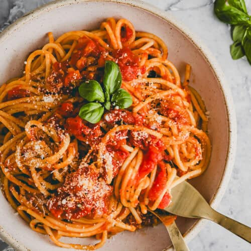

Pasta Pomodoro.

Description:
Pasta Pomodoro is a classic Italian dish featuring a simple yet flavorful tomato sauce.
It typically includes fresh tomatoes, garlic, olive oil, and basil. The sauce is simmered
until rich and slightly thickened, then tossed with al dente pasta, often spaghetti or penne.
The dish is finished with a sprinkle of Parmesan cheese and fresh basil, creating a light, fresh,
and aromatic meal that's a staple of Italian home cooking.
Ingredients:
- Spaghetti
- Cherry tomatoes
- Olive oil
- Garlic glove
- Parmesan
- Salt
- Pepper
Steps:
- Boil Pasta: Cook pasta in salted water until al dente. Reserve some pasta water, then drain.
- Sauté Garlic: In a pan, heat olive oil and sauté minced garlic until fragrant.
- Add Tomatoes: Add chopped fresh tomatoes (or canned) and cook until they break down and release juices.
- Simmer Sauce: Let the sauce simmer for 10-15 minutes, stirring occasionally. Season with salt and pepper.
- Mix Pasta: Toss cooked pasta in the sauce, adding reserved pasta water if needed to adjust consistency.
- Add Basil: Stir in fresh basil leaves.
- Serve: Plate the pasta and top with grated Parmesan cheese.